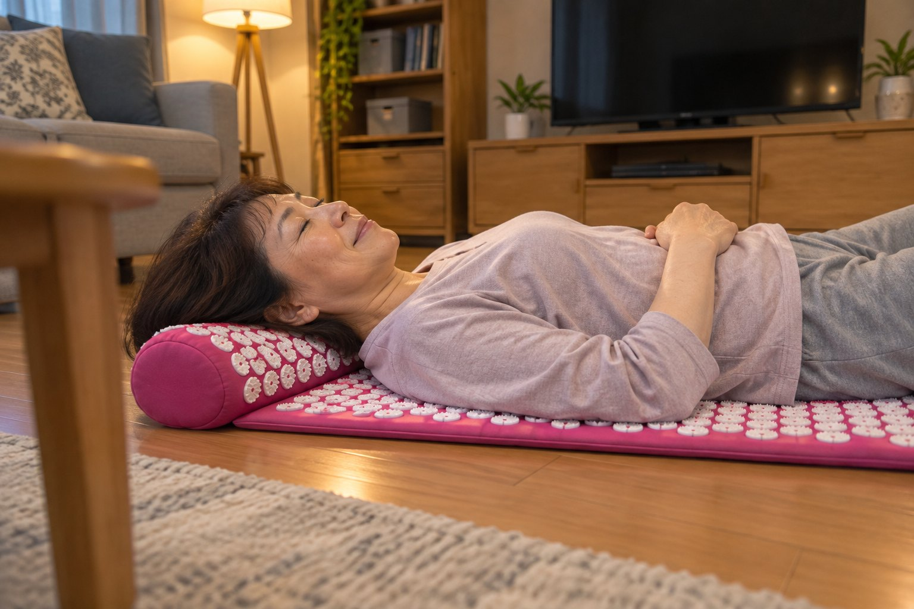
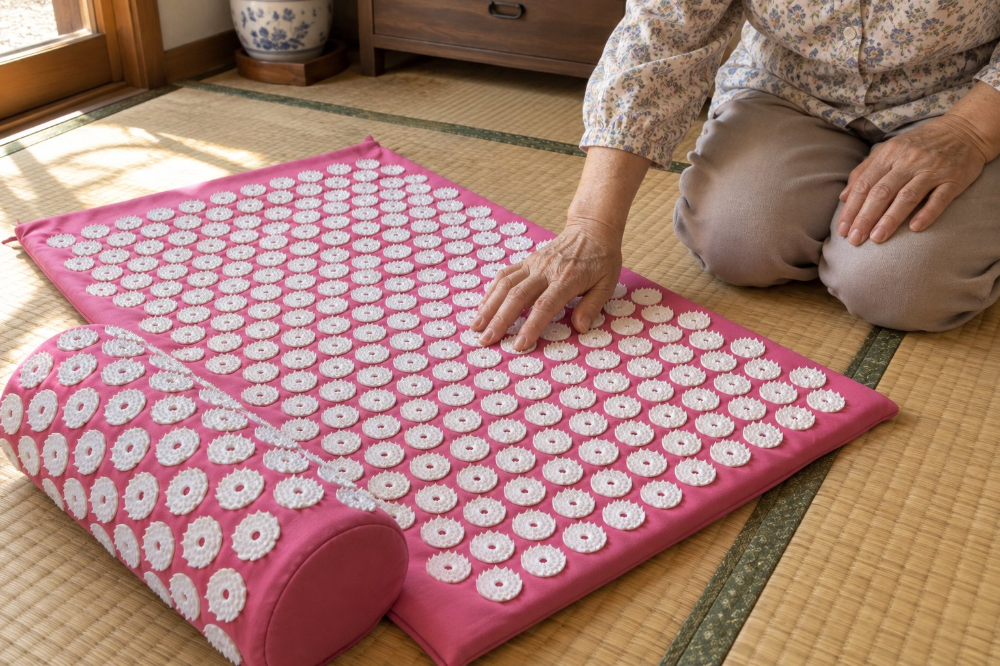
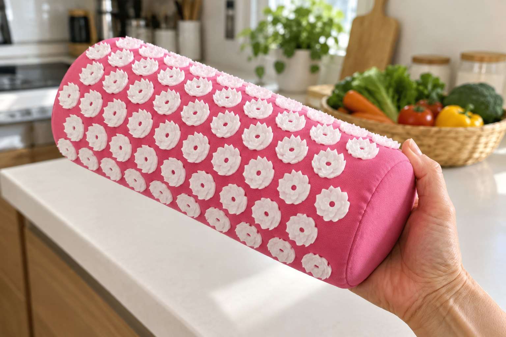
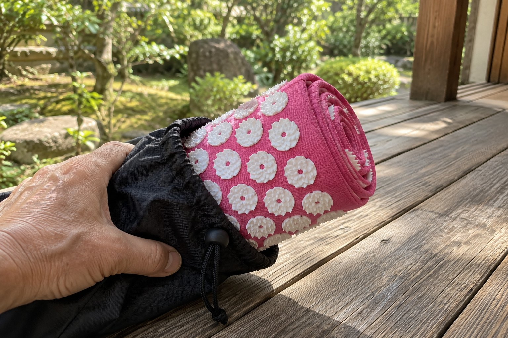
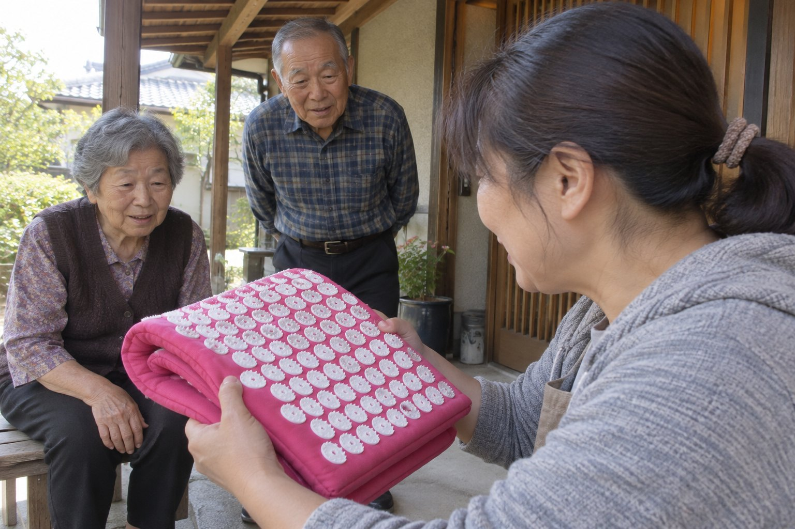

朝から晩まで続く腰の激痛は、腰の筋肉の「酸欠」を知らせる電話かもしれません
酸欠のまま弱りきった腰の筋肉は、背骨を支えきれなくなります。行き着く先は、スーパーのレジに並ぶ数分さえ、立っていられない夕方です。カートにもたれて、順番を待つことになります。

取材協力｜早川 由紀子 医師（整形外科専門医）✓
腰痛外来で14年、慢性腰痛の患者さんを診てきた。
文：からだ取材室 編集部｜更新：2026年10月9日
★★★★★4.6｜2,384件の評価
「朝から晩まで続いていた腰の激痛が、夕方にはもう気にならなくなりました。」斎藤 直子さん・60歳
秋の大感謝セール 最大50%OFF 秋の大感謝セール 最大50%OFF 秋の大感謝セール 最大50%OFF 秋の大感謝セール 最大50%OFF 秋の大感謝セール 最大50%OFF 秋の大感謝セール 最大50%OFF 秋の大感謝セール 最大50%OFF 秋の大感謝セール 最大50%OFF
朝から晩まで、腰の激痛が続く？
「腰痛持ちだから」と片づける前に
こんにちは。整形外科専門医の早川です。
腰痛外来で14年、慢性腰痛の患者さんを診てきました。
腰の痛みと毎日付き合うのは、つらいことです。本当に、つらいことです。
はじめは、たまにズキッとくるだけでした。
それがいつの間にか、朝起きた時から、夜布団に入るまで続くようになります。
多くの方は、ここで「私は腰痛持ちだから」と考えます。そして、がまんして一日を続けます。
たしかに、腰痛はとてもよくある悩みです。日本では、自覚する症状の1位が腰痛です。
でも、朝から晩まで激痛が続く方を診る時、私がまず疑うのは、腰の筋肉の酸欠です。
激痛は、酸素の足りない筋肉が出している知らせです。鳴りやまない電話のベルのようなものです。
出ないでいると、ベルは何年でも鳴り続けます。
だから、「腰痛持ちだから」で片づけないでください。
その激痛が何を知らせているのかを、見落とさないでください。
激痛が朝から晩まで続くようになった人に、私が話すこと
腰には、すべてを決めている物が1つあります。腰の奥の筋肉に届く「酸素」です。
背骨の両わきを縦に走る、脊柱起立筋という筋肉があります。腰を支えている筋肉です。
酸素が足りていれば、この筋肉は、動いては休み、自分でゆるみます。
でも同じ姿勢が続くと、筋肉は同じ形のまま固まります。
固まった筋肉は、自分の中を通る血管をギュッとつぶします。
血が止まるので、血が運ぶ酸素も届きません。これが「筋肉の酸欠」です。
酸素の足りない筋肉には、痛みの物質がたまります。痛いから、また固まります。
日本ペインクリニック学会の治療指針も、この流れを「痛みの悪循環」と書いています。
腰痛に悩む人は、日本で推計2,800万人。40〜60代では、およそ4割です。
私の外来で見ていると、この悪循環は、たいてい3つの段で進みます。
はじめは、たまに激痛が走るだけです。固まった所で、血が止まりかけています。
次に、激痛が朝から晩まで続きます。血は、一日じゅう止まったままです。
最後に、酸素の来ない筋肉が、やせて弱っていきます。弱った筋肉は、背骨を支えきれません。
ここまで来ると、腰はなかなか元に戻りません。
固まった筋肉は、待っていても、一人ではゆるみません。外から押されると、押された所に血が流れこみます。
ところが、今の暮らしの中に、腰を外から押す物はほとんどありません。
一日じゅう座るか、立つか。腰の筋肉は、ずっと同じ形のままです。
残念ながら、日ごとに寒くなるこれからの季節は、筋肉がもっと固まりやすくなります。
多くの対策は、痛みの「表面」しか触っていません。
❌がまん…待っていても、筋肉は一人でゆるまない
❌湿布…痛みの感じ方を鈍らせるだけ。血は止まったまま
❌マッサージ器…当てた一点だけ。持つ腕が先に疲れる
❌整体…週に1回。次の日から、また固まり始める
必要なのは、固まった筋肉を外から広く押して、血を流しこむこと。それを毎日続けることです。
幸い、今夜から家でできる、とても簡単な方法が1つあります。
私が、患者さんにすすめている物
ハリネル 自重指圧マット。腰痛外来で14年診てきて、腰を外から毎日押せる物として私が患者さんに名前を出すのは、これです。理由はこうです。
布の一面に、針のような小さな突起が、数えきれないほど並んでいます。
この上に寝転ぶと、あなたの体重が、面いっぱいの突起に分かれます。そして、腰から背中までを一度に押します。
押しているのは、あなた自身の体重です。これを「自重指圧」と呼びます。
はじめは、背中がチクチクします。そこへ、血が集まってきます。
数分で、チクチクがじんわりした温かさに変わります。止まっていた血が、固まった筋肉に酸素を運んでいます。
研究もあります。慢性腰痛の42人を2つに分けた、ドイツの試験です。1日30分・14日使った人たちは、使わなかった人たちより痛みの強さが下がりました。
家では、1日10分から始めてください。慣れたら、長く寝転んでもかまいません。
別の32人の試験では、マットの上で、背中の血のめぐりが増えるしるしが出ています。
使っている人は3万人以上。2,384件の評価で、平均は★4.6です。
そして、いちばんうれしい所は？
電気も充電もいらないことです。床に敷けば、今夜から使えます。
「夕方になると、台所に立つのもつらいほどでした。寝る前に10分寝転ぶようにしたら、2週目あたりから、夕方の腰が楽なんです。」松本 典子さん・63歳
「腰痛持ちだから仕方ないと、20年がまんしてきました。いまは、朝から晩まで続く激痛がありません。もっと早く知りたかったです。」井上 和夫さん・59歳
夕方まで、腰をまっすぐ伸ばしていられる毎日へ ›
90日間の返金保証つき
毎日使うと、こう変わっていきます
1週目最初はチクチク。でも数分で、腰がじんわり温かくなります。寝転ぶ10分が、一日の楽しみになります。
4週目夕方になっても、腰がまっすぐ伸びている日が増えます。
2か月夜、歯を磨きながら、「今日は激痛がなかった」と気づく日が続きます。
3か月レジの列も、台所仕事も、腰を気にせずこなせます。あきらめていた買い物や旅行も、また楽しめます。
ハリネル 自重指圧マット
腰を外から、毎日10分
マットと半円の枕と収納バッグのセット。寝転ぶだけで、腰から背中までを一度に押します。
専門医の考え方から「広い面を・手を使わず・毎日」押せる形にしました
研究にもとづく指圧マットの試験で、慢性腰痛の痛みが下がっています
電気いらず電気も充電も使いません。丸めて袋ひとつに収まります
1日10分床に敷いて、寝転ぶだけです
いまだけ50%OFFで確かめる ›
90日間の返金保証つき・送料無料
腰の筋肉が「酸欠」になっている7つのサイン
1つでも当てはまるなら、今日のうちに手を打ってください。
❌朝起きた時から、腰に激痛がある
❌夜、布団に入るまで激痛が続く
❌前は「たまに」だった激痛が、毎日になった
❌台所やレジで立っていると、腰をさすっている
❌押すと、背骨の両わきがゴリゴリする
❌「腰痛持ちだから」と、何年もがまんしている
❌病院の検査では「異常なし」と言われた
放っておけば、もっと悪くなります。でも今なら、まだ間に合います。
腰がよくならないのは、
あなたのせいではありません
あなたは、ずっとがまんしてきました。湿布を貼り、マッサージ器を当て、整体にも通いました。
でも、本当のことを言います。
どれも、止まった血を、腰の奥の筋肉に流しこんではいませんでした。
ハリネルは、腰を外から広く押して血を流しこむために作られた、唯一の針マットです。この悪循環を、根っこで止めます。
夕方も、腰がまっすぐ伸びている。夜は、激痛のなかった一日に気づく。使った方の多くが、数週間で夕方の腰が変わったと話しています。
ただ激痛をがまんする毎日ではありません。一年じゅう、自分の足で動ける毎日です。
止まった血を、今夜から流しこむ ›
90日間の返金保証つき
いまは50%OFF。1日あたり約75円です
ここまで読んだ方は、「いくらなのか」が気になっていると思います。
日ごとに寒くなる秋は、腰の激痛が増える季節です。ありがたいことに、売り切れが続いています。
まず、今の腰の対策にかかっている値段と比べてみてください。
整体1回6,500円。週1回通えば、1年で約34万円です
湿布7枚で1,188円。毎日1枚なら、1日あたり約170円です
マッサージ器1万円台。当てた一点だけで、持つ腕が先に疲れます
がまんお金はかかりません。でも、激痛は朝から晩まで続きます
秋の大感謝セール
最大50%OFF・期間限定
セットに、収納バッグを無料でおつけします
セット（マット＋枕）54,980円 → 27,490円（税込）
収納バッグと送料は無料
セットを1年使うと、27,490円÷365日で、1日あたり約75円です。
1日75円で、毎晩10分、腰を外から押せます。
いちばん多く選ばれているのは、マットと枕のセットです。腰と首の下に、同時に使えます。在庫があるうちに、ご自分の腰を守ってください。
50%OFFで針マットを確かめる ›
品切れの心配：高い送料無料90日間の返金保証
使っている人の声

★★★★★
寝転ぶ10分が、一日のごほうび
最初のチクチクには驚きましたが、すぐ温かくなります。テレビを見ながら寝転んでいます。
木村 久美子さん・55歳
★★★★★
台所に立つのが楽になりました
夕方は腰をさすりながら料理をしていました。今は、まっすぐ立っていられます。
林 信子さん・67歳
★★★★★
枕は首にも気持ちいい
腰はマット、首は枕。寝る前に両方使うのが、毎日の習慣になりました。
清水 雅子さん・61歳
★★★★★
丸めて袋にしまえる
使わない時は、丸めて袋に入れておきます。旅行にも持っていきました。
山口 浩さん・65歳
★★★★★
両親にも買いました
腰痛持ちの父と母に送りました。二人で毎晩、順番に寝転んでいるそうです。
森 由美さん・50歳
90日間
90日間の返金保証
90日のあいだ、毎晩寝転んでみてください。腰が変わらなければ、メールを1通送るだけで返金します。
理由は聞きません。面倒な手続きもありません。
90日間、自分の腰でためす ›
送料無料・90日間の返金保証
よくある質問
届くまで何日かかりますか？
ご注文から7〜10日でお届けします。送料は無料です。
返金保証はありますか？
はい。90日間の返金保証があります。メール1通で手続きできます。
痛くないですか？
はじめの数十秒は、チクチクします。数分で、じんわりした温かさに変わります。痛い時は、薄いシャツやタオルの上から使ってください。
何でできていますか？
布のマットに、プラスチックの突起が並んでいます。電気も充電も使いません。
セットと単品の違いは？
セットには、マットと枕の両方が入り、収納バッグもつきます。腰と首の下に、同時に使えます。
定期便はありますか？
ありません。一度買えば、ずっと使えます。
出典
・厚生労働省「2022年 国民生活基礎調査の概況」（自覚症状の1位は男女とも腰痛）
・日本ペインクリニック学会『ペインクリニック治療指針』筋・筋膜性疼痛症候群（痛みの悪循環）
・薬事日報 2013年4月1日（厚生労働省研究班の推計：腰痛の人は推計2,800万人）
・Hohmann C ほか. Evid Based Complement Alternat Med 2012:753583（慢性腰痛の42人の試験）
・Olsson EM ほか. J Altern Complement Med 2011;17(1):5-12（32人の試験）
※ この商品は医療機器ではありません。感じ方には個人差があります。